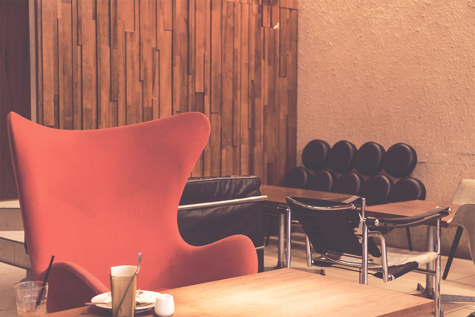

Welcome to Tokyo Cafe Crawl, a gateway into the hidden cafes of Tokyo. Enjoy the discovery, and check back for updates!
東京カフェクロールは東京にあるカフェをまとめたサイトです。完成後は定期的にアップデートしますので、また遊見にきてくださいね！
RECENT CAFE VISITS
- Stylish interior design, coupled with being able to see Tokyo Skytree
- There is so much space that making a reservation is usually easy.
- Awesome place to hold any event
- インテリアがスタイリッシュな上に東京スカイツリーも隅田川も見える
- スペースが広く、いつも予約が取りやすい
- イベントをに最適な場所

- Authentic home-cooked Japanese food
- In-cafe library
- Quaint and relaxing atmosphere
- 本格的な日本料理を楽しめる
- 店内には図書館がある
- 静かでのんびりとした雰囲気

- Historical cafe restaurant popular among tourists and locals
- Wide variety of coffee selection
- Sweets are delectable
- 歴史と伝統のあるカフェで観光客だけでなく東京でも人気
- コーヒーの種類が多数
- デザートはすごく美味しい

- Incredible selection of chairs, a different experience every time!
- Great meeting place after work
- Non-smoking; except for iQuos (e-cigarette)
- 様々な椅子があるため、その日の気分に合わせて好きなシートを選ぶことができる
- 待ち合わせとして最適な場所
- 全席禁煙（＊iQOSの電子タバコならOK）
- Good environment to study and work
- Fun to chat with staff and other customers
- Pleasant cafe atmosphere during day, relaxing lounge feeling in evening
- 勉強するのにいい環境
- スタッフに話かけやすい
- 快適に過ごせるスペース
- Live events featuring Okinawa artists
- Comfortable neighborhood atmosphere
- Lots of awamori types
- 沖縄の歌手がよくライブイベントを開催
- 雰囲気がアットホーム
- 泡盛の種類が多数